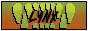
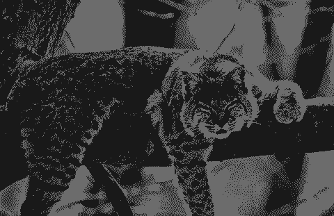

hi im lynx

i occasionally create things. you can see them here
this site serves as a way to organize a variety of things for myself as well as be a hub for my online identity!


created [date] and last updated [date]. you're visitor #[number]
nekoweb followers: number loading...